|
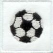
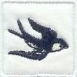
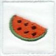
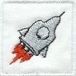
|
Ha gyermeke most kezdi az óvodát:
felvarrható hímzett ÓVODAI JELEK széles választékát kínáljuk.
Vidám, kedves figurák, melyeket a gyermekek is könnyen
felismernek, az óvónéniknek pedig segíthetnek a gazdátlanul kóborló holmik
tulajdonosát megkeresni :-)
Esztétikus, könnyen kezelhető, jól
mosható jelek, fehér selyemre hímezve, 3x3 cm-es, 5x5 cm-es és 10x10 cm-es méretben. Néhány öltéssel
felvarrva egyszerűen rögzíthetők bármilyen felsőruházatra, törülközőre,
ágyneműre, fésűtartóra, ballagási tarisznyára, stb.
Kínálatunkban már több, mint 190-féle jel szerepel. Keresse meg gyermeke jelét:
A, Á
B
C, Cs
D
E, É
F
G, Gy
H
I
J
K
L
M
N, Ny
O, Ö
P
R
S, Sz
T
U, Ü
V
Z
Figyelem! Technikai okok miatt a hímzés színeiben a képernyőn láthatóhoz képest árnyalatnyi eltérések lehetségesek.
| 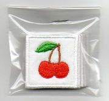
|
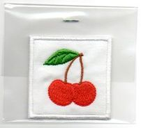
|
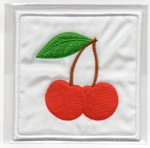
|
5 db 3x3 cm-es egyforma jel egy csomagban:
500 Ft/csomag.
|
1 db 5x5 cm-es jel:
220 Ft.
|
1 db 10x10 cm-es jel:
600 Ft.
|
Óvodai csoportok számára lehetőséget biztosítunk fajtánként 1-2 db jel vásárlására is, ezesetben a jelek ára 120 Ft/db (3x3 cm).
|
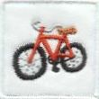
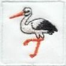
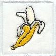
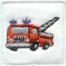
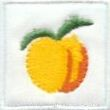
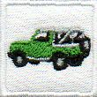
|